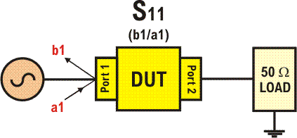

DSP_RF_RETURN_LOSS()
This function is used for a one-port S-parameter measurement (S11, also known as return loss).

This API is defined in the header file /opt/hp93000/soc/prod_com/include/MAPI/libdsp.h.
Syntax
DSP_RF_RETURN_LOSS (const ARRAY_COMPLEX & s11aData,
const ARRAY_COMPLEX & s11bData,
const ARRAY_D & measParams,
const INT site,
ARRAY_D & s11Result,
DOUBLE * inputPower_dBm);I/O |
Parameter |
Notes |
|---|---|---|
I |
s11aData |
A complex array representing the captured data for the a1 term (signal into port 1 of the DUT). |
I |
s11bData |
A complex array representing the captured data for the b1 term (signal from port 1 the DUT). |
I |
measParams |
An array of doubles which contains information about the properties of the measurement definition, together with frequency-dependent calibration data. |
I |
site |
site Id |
O |
s11Result |
An ARRAY_D (array of doubles) holding the S11 result in the form of a pair of values (representing relative amplitude in dB and relative phase in degrees, in that order). |
O |
inputPower_dBm |
A pointer to the value in dBm of input power to the DUT. |
Example
In this example, it would be necessary for the variables that are used as function parameters to have been declared as follows:
ARRAY_COMPLEX s11a = MEAS_DEF("myRlMeas").getComplexWaveform(1);
ARRAY_COMPLEX s11b = MEAS_DEF("myRlMeas").getComplexWaveform(2);
ARRAY_D measParams = MEAS_DEF("myRlMeas").getParameters(TM::RF_MEAS_RETURN_LOSS, 0);
ARRAY_D results(TM::RF_DSP_RETURN_LOSS_RESULT_SIZE);
DOUBLE measuredPower=0;
DSP_RF_RETURN_LOSS(s11a, s11b,measParams, 1, results, &measuredPower); The results could be printed to the report window as follows:
cout << "S11 = " << results[0] << ", " << results[1] << endl; cout << "Measured Power = " << measuredPower << " dBm " << endl;
Functional changes
- Introduced before SmarTest 6.3.2